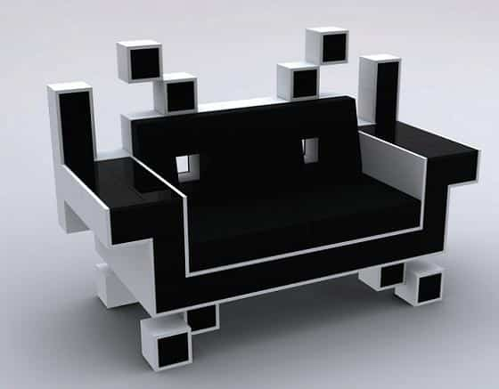
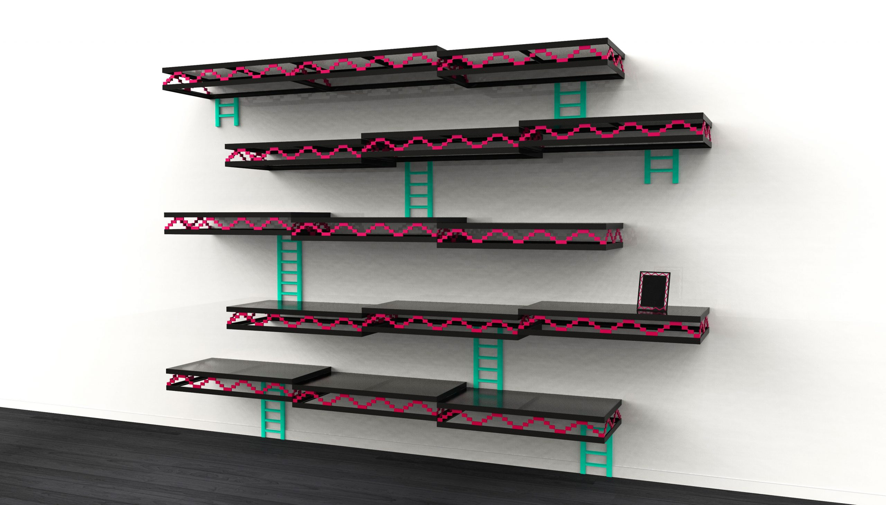
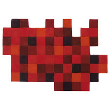
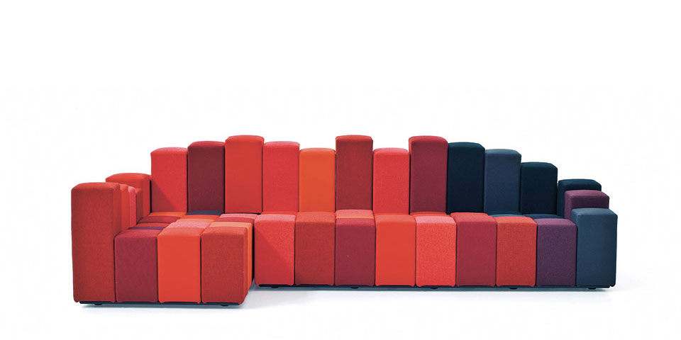

Mes références
Objet
Igor Chak
Space Invader Couch
Les étagères Donkey Kong
 Ces deux meubles sont des hommages à des anciens jeux : Space Invader et Donkey Kong.
Ils questionnent le passage de la 2 dimensions à la 3 dimensions.
Ron Arad
Le travail du relief dans l’espace
Do-Lo-Rez
Canapé
 Ces deux meubles sont des hommages à des anciens jeux : Space Invader et Donkey Kong.
Ils questionnent le passage de la 2 dimensions à la 3 dimensions.